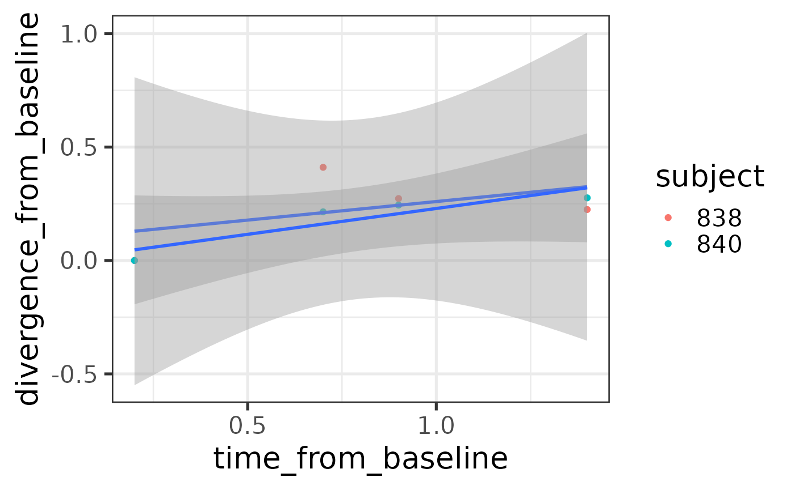
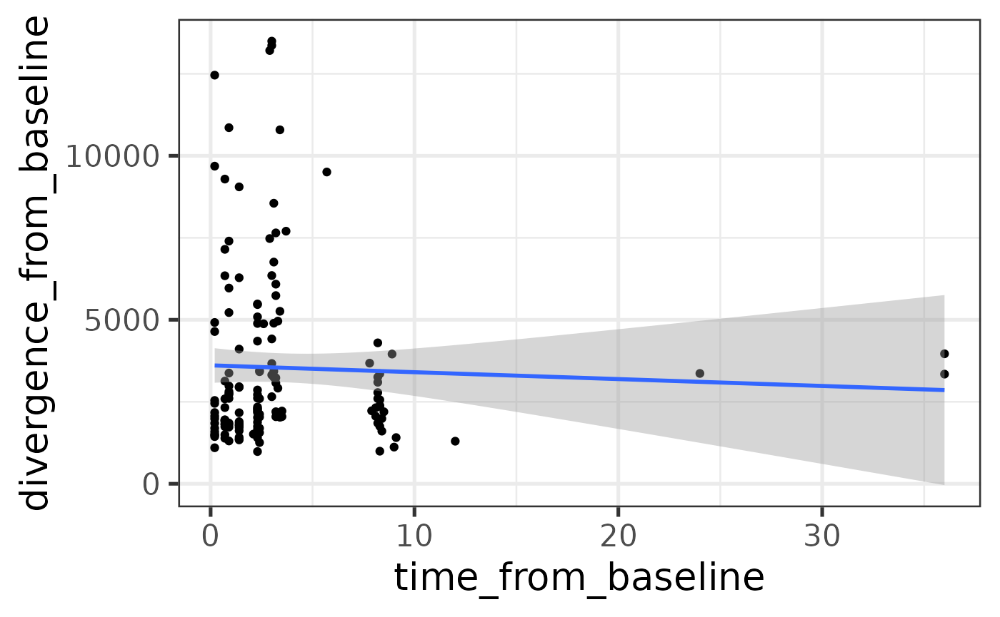

vignettes/articles/divergence.Rmd
divergence.RmdmiaTime implements tools for time series manipulation based on the TreeSummarizedExperiment (Huang 2021) data container. Much of the functionality is also applicable to the SummarizedExperiment (Morgan et al. 2020) data objects.
This tutorial shows how to analyse divergence, convergence, and dynamics in time series.
Installing the latest development version in R.
library(devtools)
devtools::install_github("microbiome/miaTime")Loading the package:
Calculate divergence from a baseline sample (or another reference sample). This calculation can be carried out with the function . The mia package can be installed with the following lines.
Calculate the difference in time from the baseline time point per subject. The first (smallest) time point is used as the baseline by default.
library(mia) # Load the functions
library(miaTime) # Load the functions
set.seed(41287) # Set random seed
data(hitchip1006) # Example data
tse <- hitchip1006 # Rename data object
# Subset to speed up this example
# Just pick two example subjects that have 5 time points each
selected.samples <- sample(names(which(sort(table(colData(hitchip1006)$subject))==5)), 2)
tse <- tse[, colData(tse)$subject %in% selected.samples]
# Add relative abundances
tse <- transformSamples(tse, abund_values="counts", method="relabundance")
# Calculate divergence from baseline sample (time point 1)
library(dplyr)
tse <- getBaselineDivergence(tse,
group = "subject",
time_field = "time",
name_divergence = "divergence_from_baseline",
name_timedifference = "time_from_baseline",
abund_values="relabundance",
FUN = vegan::vegdist,
method="bray")## Warning: The following values are already present in `colData` and will be
## overwritten: 'time'. Consider using the 'name' argument to specify alternative
## names.
# Remove the baseline time points
df <- as.data.frame(colData(tse)) %>% dplyr::filter(time_from_baseline > 0)
# Visualize time difference vs. community divergence (dissimilarity)
library(ggplot2)
theme_set(theme_bw(20))
ggplot(data=df, aes(x=time_from_baseline, y=divergence_from_baseline, group=subject)) +
geom_point(aes(color=subject)) +
geom_smooth(formula = y ~ x, method="lm")
Define the baseline manually for each subject.
# First define the function that defines the baseline for a given data object:
base <- function (tse) {
baseline_sample <- rownames(colData(tse)[which.min(colData(tse)$time),])
baseline_sample
}
# List samples per subject
spl <- split(colnames(tse), droplevels(tse$subject))
# Find the baseline per subject
baselines <- sapply(spl, function (s) {base(tse[,s])})
# Calculate divergence from baseline sample (time point 1)
library(dplyr)
tse <- getBaselineDivergence(tse,
group = "subject",
time_field = "time",
name_divergence = "divergence_from_baseline",
name_timedifference = "time_from_baseline",
abund_values="relabundance",
FUN = vegan::vegdist,
method="bray",
baseline_sample=baselines)## Warning: The following values are already present in `colData` and will be
## overwritten: 'time'. Consider using the 'name' argument to specify alternative
## names.## Warning: The following values are already present in `colData` and will be
## overwritten: 'divergence_from_baseline'. Consider using the 'name' argument to
## specify alternative names.## Warning: The following values are already present in `colData` and will be
## overwritten: 'time_from_baseline'. Consider using the 'name' argument to specify
## alternative names.## Warning: The following values are already present in `colData` and will be
## overwritten: 'divergence_from_baseline'. Consider using the 'name' argument to
## specify alternative names.
## Warning: The following values are already present in `colData` and will be
## overwritten: 'divergence_from_baseline'. Consider using the 'name' argument to
## specify alternative names.## Warning: The following values are already present in `colData` and will be
## overwritten: 'time_from_baseline'. Consider using the 'name' argument to specify
## alternative names.## Warning: The following values are already present in `colData` and will be
## overwritten: 'divergence_from_baseline'. Consider using the 'name' argument to
## specify alternative names.
# Remove the baseline time points
df <- as.data.frame(colData(tse)) %>% dplyr::filter(time_from_baseline > 0)
# Visualize time difference vs. community divergence (dissimilarity)
library(ggplot2)
theme_set(theme_bw(20))
ggplot(data=df, aes(x=time_from_baseline, y=divergence_from_baseline, group=subject)) +
geom_point(aes(color=subject)) +
geom_smooth(formula = y ~ x, method="lm")Similar example without miaTime. First without subject-wise grouping:
# Identify the baseline sample
tse <- hitchip1006
baseline_sample <- colnames(tse[, which.min(colData(tse)$time)])
# Pick the reference sample from count assay and calculate euclidean distance
# Name the new field as "divergence_from_baseline".
# This contains the divergence information.
library(mia)
baseline_profile <- assays(tse)$counts[, baseline_sample]
print(length(baseline_profile))## [1] 130## [1] 130 1151
tse <- estimateDivergence(tse, name = "divergence_from_baseline",
reference = baseline_profile,
FUN = stats::dist, method = "euclidean")
# Also add time from baseline
colData(tse)$time_from_baseline <- colData(tse)[, "time"] -
colData(tse)[baseline_sample, "time"]
# Visualize time difference vs. community divergence (dissimilarity)
library(dplyr)
df <- as.data.frame(colData(tse)) %>% dplyr::filter(time_from_baseline > 0)
library(ggplot2)
ggplot(data=df, aes(x=time_from_baseline, y=divergence_from_baseline)) +
geom_point() +
geom_smooth(formula = y ~ x, method="lm")
Divergence from baseline per subject:
# First define the function that calculates divergence for a given SE object
# in a desired way:
fun <- function (tse) {
baseline_sample <- rownames(colData(tse)[which.min(colData(tse)$time),])
estimateDivergence(tse, name = "divergence_from_baseline",
reference = assays(tse)$counts[, baseline_sample],
FUN = stats::dist, method = "euclidean")
}
# List samples per subject
spl <- split(colnames(tse), tse$subject)
# Apply the operation per subject (here just the first 3 to speed up example)
tse_list <- lapply(spl[1:3], function (s) {fun(tse[,s])})
# Combine the TSE elements in the list
tse2 <- do.call(cbind, tse_list)Calculate convergence i.e. divergence from the last sample:
# Identify the last sample
tse <- hitchip1006
endpoint_sample <- colnames(tse[, which.max(colData(tse)$time)])
# Pick the reference sample from count assay and calculate euclidean distance
# Name the new field as "convergence".
# This contains the divergence information.
library(mia)
tse <- estimateDivergence(tse, name = "convergence",
reference = assays(tse)$counts[, endpoint_sample],
FUN = stats::dist, method = "euclidean")
# Also add time from endpoint
colData(tse)$time_from_endpoint <- colData(tse)[, "time"] -
colData(tse)[endpoint_sample, "time"]Sample dissimilarity between consecutive time steps(step size n >= 1) within a group(subject, age, reaction chamber, etc.) can be calculated by getStepwiseDivergence.
library(miaTime)
data("hitchip1006")
tse <- hitchip1006
tse <- tse[, colData(tse)$subject %in% c("900", "934", "843", "875")]
tse2 <- getStepwiseDivergence(tse, group = "subject",
time_interval = 1,
time_field = "time")
#for multiple time steps in a different grouping
tse3 <- getStepwiseDivergence(tse, group = "age",
time_interval = 2,
time_field = "time")## R version 4.2.0 (2022-04-22)
## Platform: x86_64-pc-linux-gnu (64-bit)
## Running under: Ubuntu 22.04 LTS
##
## Matrix products: default
## BLAS: /home/xxx/bin/R-4.2.0/lib/libRblas.so
## LAPACK: /home/xxx/bin/R-4.2.0/lib/libRlapack.so
##
## locale:
## [1] LC_CTYPE=en_US.UTF-8 LC_NUMERIC=C
## [3] LC_TIME=en_US.UTF-8 LC_COLLATE=en_US.UTF-8
## [5] LC_MONETARY=en_US.UTF-8 LC_MESSAGES=en_US.UTF-8
## [7] LC_PAPER=en_US.UTF-8 LC_NAME=C
## [9] LC_ADDRESS=C LC_TELEPHONE=C
## [11] LC_MEASUREMENT=en_US.UTF-8 LC_IDENTIFICATION=C
##
## attached base packages:
## [1] stats4 stats graphics grDevices utils datasets methods
## [8] base
##
## other attached packages:
## [1] ggplot2_3.3.6 lubridate_1.8.0
## [3] dplyr_1.0.9 miaTime_0.1.10
## [5] mia_1.5.1 MultiAssayExperiment_1.23.2
## [7] TreeSummarizedExperiment_2.5.0 Biostrings_2.65.1
## [9] XVector_0.37.0 SingleCellExperiment_1.19.0
## [11] SummarizedExperiment_1.27.1 Biobase_2.57.1
## [13] GenomicRanges_1.49.0 GenomeInfoDb_1.33.3
## [15] IRanges_2.31.0 S4Vectors_0.35.1
## [17] BiocGenerics_0.43.0 MatrixGenerics_1.9.1
## [19] matrixStats_0.62.0 BiocStyle_2.25.0
##
## loaded via a namespace (and not attached):
## [1] circlize_0.4.15 systemfonts_1.0.4
## [3] plyr_1.8.7 lazyeval_0.2.2
## [5] splines_4.2.0 BiocParallel_1.31.10
## [7] scater_1.25.1 sva_3.45.0
## [9] digest_0.6.29 foreach_1.5.2
## [11] yulab.utils_0.0.5 htmltools_0.5.3
## [13] viridis_0.6.2 fansi_1.0.3
## [15] magrittr_2.0.3 memoise_2.0.1
## [17] ScaledMatrix_1.5.0 doParallel_1.0.17
## [19] cluster_2.1.3 DECIPHER_2.25.0
## [21] openxlsx_4.2.5 limma_3.53.3
## [23] ComplexHeatmap_2.13.0 annotate_1.75.0
## [25] SEtools_1.11.0 pkgdown_2.0.5
## [27] colorspace_2.0-3 blob_1.2.3
## [29] ggrepel_0.9.1 textshaping_0.3.6
## [31] xfun_0.31 crayon_1.5.1
## [33] RCurl_1.98-1.7 jsonlite_1.8.0
## [35] genefilter_1.79.0 iterators_1.0.14
## [37] survival_3.3-1 ape_5.6-2
## [39] glue_1.6.2 registry_0.5-1
## [41] gtable_0.3.0 zlibbioc_1.43.0
## [43] V8_4.2.0 GetoptLong_1.0.5
## [45] DelayedArray_0.23.0 BiocSingular_1.13.0
## [47] shape_1.4.6 scales_1.2.0
## [49] DBI_1.1.3 edgeR_3.39.3
## [51] randomcoloR_1.1.0.1 Rcpp_1.0.9
## [53] viridisLite_0.4.0 xtable_1.8-4
## [55] clue_0.3-61 decontam_1.17.0
## [57] tidytree_0.3.9 bit_4.0.4
## [59] rsvd_1.0.5 httr_1.4.3
## [61] RColorBrewer_1.1-3 ellipsis_0.3.2
## [63] farver_2.1.1 pkgconfig_2.0.3
## [65] XML_3.99-0.10 scuttle_1.7.2
## [67] sass_0.4.1 locfit_1.5-9.6
## [69] utf8_1.2.2 labeling_0.4.2
## [71] tidyselect_1.1.2 rlang_1.0.4
## [73] reshape2_1.4.4 AnnotationDbi_1.59.1
## [75] munsell_0.5.0 tools_4.2.0
## [77] cachem_1.0.6 cli_3.3.0
## [79] DirichletMultinomial_1.39.0 generics_0.1.3
## [81] RSQLite_2.2.15 evaluate_0.15
## [83] stringr_1.4.0 fastmap_1.1.0
## [85] yaml_2.3.5 ragg_1.2.2
## [87] knitr_1.39 bit64_4.0.5
## [89] fs_1.5.2 zip_2.2.0
## [91] purrr_0.3.4 KEGGREST_1.37.3
## [93] nlme_3.1-158 sparseMatrixStats_1.9.0
## [95] compiler_4.2.0 curl_4.3.2
## [97] beeswarm_0.4.0 png_0.1-7
## [99] treeio_1.21.0 tibble_3.1.8
## [101] geneplotter_1.75.0 bslib_0.3.1
## [103] stringi_1.7.8 highr_0.9
## [105] desc_1.4.1 lattice_0.20-45
## [107] Matrix_1.4-1 sechm_1.5.1
## [109] vegan_2.6-2 permute_0.9-7
## [111] vctrs_0.4.1 pillar_1.8.0
## [113] lifecycle_1.0.1 BiocManager_1.30.18
## [115] GlobalOptions_0.1.2 jquerylib_0.1.4
## [117] BiocNeighbors_1.15.1 data.table_1.14.2
## [119] bitops_1.0-7 irlba_2.3.5
## [121] seriation_1.3.6 R6_2.5.1
## [123] TSP_1.2-1 bookdown_0.27
## [125] gridExtra_2.3 vipor_0.4.5
## [127] codetools_0.2-18 MASS_7.3-57
## [129] assertthat_0.2.1 rjson_0.2.21
## [131] DESeq2_1.37.4 rprojroot_2.0.3
## [133] withr_2.5.0 GenomeInfoDbData_1.2.8
## [135] mgcv_1.8-40 parallel_4.2.0
## [137] grid_4.2.0 beachmat_2.13.4
## [139] tidyr_1.2.0 rmarkdown_2.14.1
## [141] DelayedMatrixStats_1.19.0 Rtsne_0.16
## [143] ggbeeswarm_0.6.0Huang, Ruizhu. 2021. TreeSummarizedExperiment: TreeSummarizedExperiment: A S4 Class for Data with Tree Structures.
Morgan, Martin, Valerie Obenchain, Jim Hester, and Hervé Pagès. 2020. SummarizedExperiment: SummarizedExperiment Container. https://bioconductor.org/packages/SummarizedExperiment.